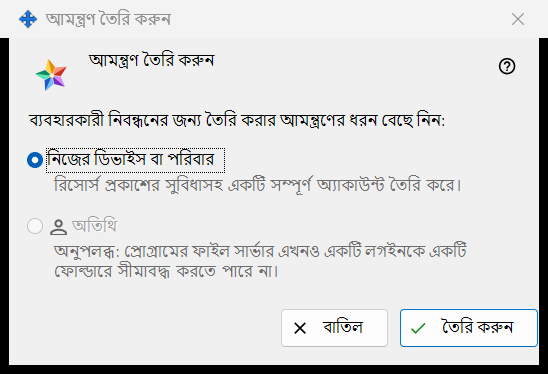
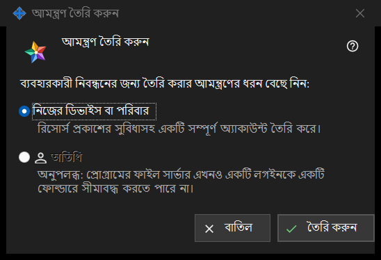

আমন্ত্রণ তৈরি করুন
এটি কীসের জন্য
এই ছোট উইন্ডো জিজ্ঞাসা করে, নতুন আমন্ত্রণ কোন ধরনের অ্যাকাউন্ট তৈরি করবে। এক্সচেঞ্জ সার্ভার সেটিংসের আমন্ত্রণসমূহ গ্রুপে থাকা বোতাম আমন্ত্রণ তৈরি করুন.. দিয়ে এটি খুলুন; ম্যানেজার সার্ভারে পৌঁছালে তবেই গ্রুপটি দেখা যায়।


এই ক্রমে
- এক্সচেঞ্জ সার্ভার সেটিংসে আমন্ত্রণসমূহ গ্রুপ খুঁজে বোতাম আমন্ত্রণ তৈরি করুন.. চাপুন।
- নিজের ডিভাইস বা পরিবার নির্বাচিত রাখুন।
- তৈরি করুন চাপুন।
- আমন্ত্রণ তৈরি হয়েছে উইন্ডো খুলে একবারই কোডটি দেখায়: সেখান থেকে কপি করুন। কিছু তৈরি না করে বেরোতে বাতিল চাপুন বা Esc চাপুন।
উপাদানসমূহ
আমন্ত্রণের ধরন
প্রশ্নটির (ব্যবহারকারী নিবন্ধনের জন্য তৈরি করার আমন্ত্রণের ধরন বেছে নিন:) নিচে দুটি রেডিও বোতাম আছে। নিজের ডিভাইস বা পরিবার ডিফল্টভাবে নির্বাচিত, এবং এর নিচের লাইনে লেখা: রিসোর্স প্রকাশের সুবিধাসহ একটি সম্পূর্ণ অ্যাকাউন্ট তৈরি করে। যিনি আমন্ত্রণটি ব্যবহার করেন, তিনি নিজের লগইন ও পাসওয়ার্ড নিবন্ধন করেন।
তৈরি করুন
বোতাম তৈরি করুন সার্ভারের কাছে একবার ব্যবহারের একটি আমন্ত্রণ চায়। সফল হলে কোড-সহ উইন্ডো খোলে এবং সেটিংস পেজে এই লাইন দেখা যায়: আমন্ত্রণ সফলভাবে তৈরি হয়েছে। সার্ভার প্রত্যাখ্যান করলে কারণ পেজে দেখানো হয় এবং কোডের উইন্ডো খোলে না। তালিকা প্রতিটি আমন্ত্রণ দেখায় ধরন, তৈরির সময়, অবস্থা ও হ্যাশ দিয়ে, কখনও কোড দিয়ে নয়।
আমন্ত্রণ প্রত্যাহার
আগে তৈরি করা কোনো আমন্ত্রণ বাতিল করতে তালিকায় সেটি নির্বাচন করে আমন্ত্রণ প্রত্যাহার করুন চাপুন। নিশ্চিত করার পরে তার কোড আর কাজ করে না।
বাতিল
বোতাম বাতিল বা Esc উইন্ডো বন্ধ করে এবং কিছু তৈরি করে না।
ম্যানেজার সেটিংস · SFTP শেয়ারিং সেটিংস · এক্সচেঞ্জ সার্ভার সেটিংস